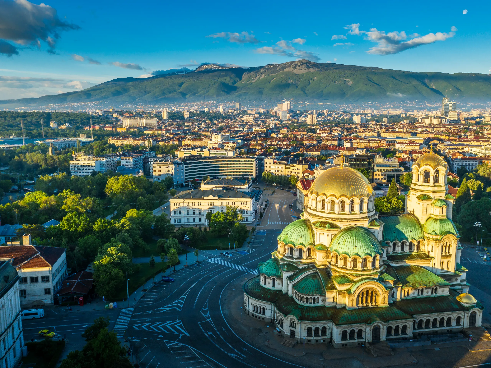

ВИКЕНД ПОНУДА

ВИКЕНД ВО СОФИЈА
Софија, Бугарија
24.02 - 27.02
Искористете го викендот за кратко патување во Софија, шармантната престолнина на Бугарија. Откријте ги историските знаменитости, прекрасните цркви и живописните улици на градот. Уживајте во пријатните кафулиња, локалната кујна и динамичната атмосфера на Софија. Совршена понуда за краток одмор со пријатели, партнер или семејство.
ВИКЕНД АВАНТУРА
Главниот град на Бугарија и еден од најзначајните историски и културни центри на земјата. Софија е позната по своите православни храмови, историски градби и живописни централни улици. Во текот на ова патување ќе има можност да се видат Катедралата Александар Невски, Руската црква,Националниот театар „Иван Вазов“ и историскиот центар на Софија.
Популарна природна дестинација во непосредна близина на Софија, позната по прекрасните планински предели и погледот кон градот. Посетата нуди можност за кратка прошетка во природа, уживање во свежиот воздух и фотографирање на панорамските пејзажи.
Состанок со групата на автобуска станица во Скопје, 30 минути пред поаѓање. Поаѓање со организиран автобуски превоз кон Софија. По пристигнувањето следува организирана пешачка прошетка низ центарот на градот. Посета на Катедралата Александар Невски и разгледување на нејзината околина. Потоа следува прошетка низ централниот дел на Софија, со посета на Руската црква и плоштадот околу Националниот театар „Иван Вазов“. Предвидено е слободно време за ручек, кафе и индивидуално разгледување. Попладнето следува сместување во хотел и време за одмор. Во вечерните часови е предвидена прошетка по булеварот Витоша, со слободно време за вечера и уживање во вечерната атмосфера. Ноќевање во хотел.
Појадок во хотелот и организирано разгледување на центарот на Софија. Следува посета на Катедралата Александар Невски, една од најпознатите знаменитости на градот. Потоа следува прошетка до Ротондата Свети Ѓорѓи, црквата Света Софија и околните историски улици. Предвидено е време за фотографирање и разгледување. Следува слободно време за ручек, кафе и индивидуални активности. Попладнето е предвидено за шопинг и прошетка по булеварот Витоша. Вечерта е слободна за вечера и одмор. Ноќевање во хотел.
Појадок во хотелот и одјавување согласно предвиденото време. Следува организирано заминување кон планината Витоша, која се наоѓа во непосредна близина на Софија. Предвидена е кратка прошетка во природата и слободно време за фотографирање и уживање во панорамскиот поглед кон градот, согласно временските услови и пристапноста. По посетата следува враќање во Софија и слободно време за ручек или кафе. Во попладневните часови следува собирање на групата и организирано поаѓање со автобус кон Скопје. По пристигнувањето и преземањето на багажот завршува организираното патување.